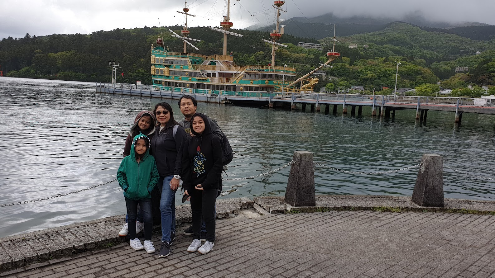

The Lune Voyage:
Travel Blog
Destination | Japan

By Anika Reese A. Montemayor | February 23, 2022
Japan may be my favourite country to visit. From peaceful shrines and stunning nature to high-tech skyscrapers and futuristic toilets, Japan has a bit of everything. The country is known to have a very distinctive culture, so it’s no surprise it’s famous for so many amazing things!As Japan is an island, it was isolated from other countries and cultures for centuries. This allowed it to create its own, unique customs and traditions. Even though Japan takes ideas and influences from other countries now, it remains to be one of the most unique places in the world.
Full of contradictions, you’ll find ancient history paired with the newest technology and development. From robot restaurants to ancient temples and cat cafes, there’s something for everyone. And let’s not forget about all of the incredible food and shopping! I’m still dreaming about all the delicious sushi, Soba, and Ramen noodles.
As a rule of thumb, late spring (March to May) and late fall (September to November) are the best times to visit. The temperatures are mild, and there’s little chance of rain ruining any plans. Plus, if you book your flights for the spring, you’ll be around for Japan’s famous cherry blossoms!

Around the summer of 2019, my family and some church friends went to Japan and explored its food, culture, and scenery. On our first day upon arriving, we settled on an airbnb that only be accessed through a passcode which shocked all of us. Next, we tried different kinds of street food that costs around ¥100, which is equivalent to ₱40 in the Philippines.
The next day, we explored Tokyo and ate many tasty treats while shopping for cute souvenirs. We went to Hakone, famous for its hot springs, and rode a pirate-like ship named Bertha. On our fourth day, we visited Disney Sea (my first time ever going to a Disney thempark). We ate flavored popcorn and rode extreme rides such as the Tower of Terror. And finally, on our last day, we explored the streets of Tokyo once more and ate at a dog cafe.
Travelling to Japan is one of my most memorable moments outside the Philippines. I would recommend it to people new to travelling to be their first stop. If I ever have the chance to visit it once again, I would definitely go.